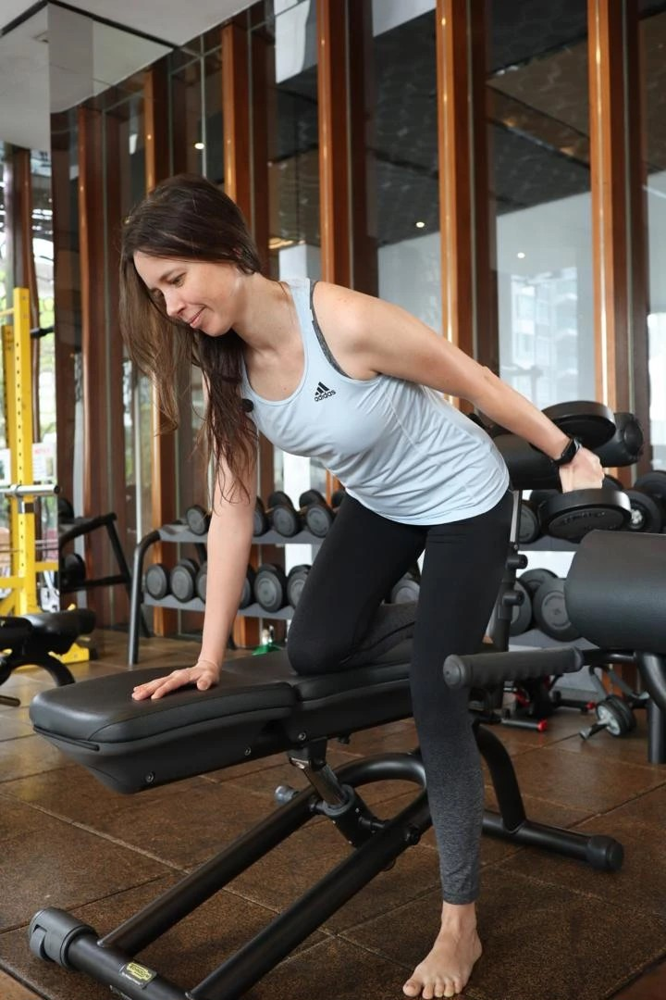

01Реабилитация после травм и операций
Помогаю вернуть подвижность, силу и уверенность в движении. Индивидуальная программа занятий учитывает ваше состояние, этап восстановления и рекомендации лечащего врача.
- восстановление подвижности суставов и объёма движений
- развитие силы и выносливости
- постепенное возвращение к повседневной активности и спорту